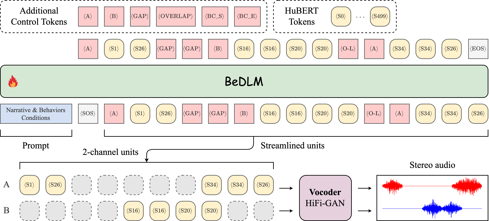

Behaviorally Aware
Spoken Dialogue Generation
Abstract
Spoken dialogue involves behaviors like turn-taking, interruptions, filler words, and backchannels, which make interactions more natural and engaging but are often overlooked in language models. These models struggle to explicitly model these behavioral traits, resulting in a less natural and personalized communication style that aligns with user needs. To address this challenge, we make two key contributions. First, we introduce Behavior-SD, a large-scale dataset containing over 100K spoken dialogues (2,164 hours) annotated with various conversational behaviors, synthesized via LLMs to model diverse full-duplex interactions. Second, we propose BeDLM, the first dialogue model capable of generating natural conversations conditioned on specific behavioral and narrative contexts, supporting simultaneous contributions from both speakers. Through human evaluations and behavior-adherence metrics, we demonstrate that BeDLM outperforms baseline models in generating natural, coherent, and behaviorally rich dialogues. Our work opens new possibilities for developing behaviorally-aware dialogue systems that more closely mimic human conversational dynamics, enhancing user engagement and communication effectiveness.
Behavior-SD

Samples from Behavior-SD
| Sample 1 |
|---|
|
Narrative: Derik wanted to pay Codi back for always being there for her, so she decided to take her out for
dinner. Derik made reservations at Codi's favorite restaurant and even ordered her favorite dish.
Codi was really touched by the gesture and appreciated it very much. |
|
Behaviors: Derik: Verbosity (1), Filler Words (2), Backchannels (1), Interruptions (2)Codi: Verbosity (1), Filler Words (0), Backchannels (1), Interruptions (1) |
|
Spoken Dialogue: |
|
Text Dialogue: Derik: Hey Codi, you know, {Yeah?} I was thinking I really wanted to, um, thank you for always being there for me. So, I've, uh, planned a little surprise for you. Codi: Oh really? What’s the surprise? {[laughter]} Derik: Well, I made reservations at your favorite restaurant, {Oh, really?} and I even ordered your favorite dish. Codi: Wow, Derik, that’s so thoughtful! {Thanks!} I’m really touched. I can't believe you remembered. Derik: Of course, I did! [laughter] You've done so much for me, it was the least I could [interrupted] Codi (interrupt): Which restaurant did you pick? Just curious. Derik: Oh, it's that Italian place you love, {Mhm.} Da Vinci's. {Nice.} You know, with the amazing pasta. Codi: That's perfect! I love their lasagna. {Great!} But hey, speaking of dining out, {Yeah?} have you heard about that new vegan place downtown? [interrupted] Derik (interrupt): Oh, um, yeah, actually, I have! {Oh, really?} But, like, I'm really excited about tonight. I just, um, hope you enjoy it. Codi: I'm sure I will, Derik. Thank you so much for doing this. It means a lot to me. |
| Sample 2 |
|---|
|
Narrative: Abbi promises Eamon not to fly because Abbi
is afraid of flying. |
|
Behaviors: Abbi: Verbosity (1), Filler Words (1), Backchannels (2), Interruptions (0)Eamon: Verbosity (0), Filler Words (0), Backchannels (0), Interruptions (2) |
|
Spoken Dialogue: |
|
Text Dialogue: Abbi: You know, Eamon, this time I'm definitely not flying. I just, I can't handle [interrupted] Eamon (interrupt): Heights? Abbi: Exactly! I get so anxious even thinking about it. Eamon: It's understandable. {Mhm.} We've talked about other ways to get there, like driving or taking a train. Abbi: Yeah, and driving isn't bad. Actually, it's quite fun. I was planning on making a road trip out of it. Maybe stop by some places on the way, like [interrupted] Eamon (interrupt): The national parks? Abbi: Yes! That would be a perfect break from the drive. And you know what, it's way less stressful. Eamon: Sounds like a good plan. {Yeah!} Let's make sure to plan those stops then. Abbi: Definitely. And I already promised myself no flights this time, no matter what. You gotta keep me accountable, okay? Eamon: Of course, {Great.} I've got your back. |
| Sample 3 |
|---|
|
Narrative: Markell was kind enough to invite Moishe to
stay the night, even though Moishe was a
complete stranger. Markell made sure that
Moishe had everything they needed and even
offered to make them breakfast in the
morning. |
|
Behaviors: Markell: Verbosity (0), Filler Words (0), Backchannels (1), Interruptions (2)Moishe: Verbosity (2), Filler Words (2), Backchannels (0), Interruptions (0) |
|
Spoken Dialogue: |
|
Text Dialogue: Markell: So, do you need anything else to be comfortable tonight? Moishe: Uh, you know, I think I have everything I need. It's, um, really nice of you to, uh, offer me a place to stay. I didn’t expect, um, such hospitality from someone I just met. Markell: No problem. Happy to help. Moishe: Well, uh, in the morning, I usually like, um, a bit of breakfast to start my day. I've heard, uh, it's the most important meal, and I like to make it sort of detailed with eggs, toast, sometimes a bit of, uh [interrupted] Markell (interrupt): I’ll make us breakfast. Eggs sound good? Moishe: Yeah, that's great! Thank you. And, uh, if you don't mind me saying, your hospitality reminds me of this friend I used to have who would, uh, always welcome guests warmly, {Oh, really?} always eager to provide, sort of, a complete experience {Hmm} whether it be with food, comfort, or just, you know [interrupted] Markell (interrupt): Glad to hear that. Rest up. Moishe: Thanks again, Markell. {You're welcome.} It's, um, really appreciated. I, uh, had a long day and was just thinking of how to unwind with, uh [interrupted] Markell (interrupt): Coffee or tea for breakfast? Moishe: Oh, uh, tea would be lovely. Thanks! |
| Sample 4 |
|---|
|
Narrative: Illiana and Jerred got into a fight because Jerred wouldn't let Illiana borrow his car. As
punishment, Jerred made Illiana clean hisroom and do all the chores for a week. |
|
Behaviors: Illiana: Verbosity (2), Filler Words (2), Backchannels (1), Interruptions (0)Jerred: Verbosity (0), Filler Words (1), Backchannels (0), Interruptions (2) |
|
Spoken Dialogue: |
|
Text Dialogue: Illiana: You know, Jerred, I've been thinking, like, that maybe I didn't exactly deserve the whole, um, punishment thing with your car, you know? Jerred: I mean, it wasn't just about borrowing the car. It's also about trust, Illiana. Illiana: Right, but I was super careful the last time I borrowed it, and, um, I only needed it for a really quick trip. So, it's like, not a big deal or anything, but [interrupted] Jerred (interrupt): You were late the last time. {Uh-huh.} That's why it felt risky. Illiana: I guess. But making me clean your room and do all those chores? It's, like, pretty excessive, don't you think? Jerred: Well, you learned your lesson, right? That was the point. Illiana: Yeah, I learned that doing chores isn't exactly fun. But still, I mean, maybe if we, you know, talked it through a bit more, we could figure out a better way [interrupted] Jerred (interrupt): Like, just asking directly next time, maybe. Communication helps. Illiana: For sure, I get that. So, next time, I'll just, um, run it by you beforehand, and maybe we could come to some sort of mutual agreement on the whole, you know, borrowing deal without going into punishment territory. Jerred: Sounds good. Let's just keep things smooth next time. |
BeDLM
(Behavior-conditioned Dialogue Language Model)
We introduce BeDLM, a spoken dialogue language model designed to generate simultaneous two-channel speech conditioned on conversational behaviors and a narrative. BeDLM is trained on Behavior-SD, a large-scale dataset containing over 100K spoken dialogues annotated with conversational behaviors and narratives.
Comparison of generated dialogues from BeDLM and baselines
| Sample 1 | ||||
|---|---|---|---|---|
|
Narrative: Kierston watched Zayna's antics. He was amused by the way Zayna was trying to make the other kids laugh. |
||||
|
Behaviors: Kierston: Verbosity (2), Filler Words (0), Backchannels (0), Interruptions (2)Zayna: Verbosity (1), Filler Words (2), Backchannels (1), Interruptions (0) |
||||
| Ground Truth | Resynthesized | BeDLM (ours) | dGSLM | Cascaded |
| Sample 2 | ||||
|---|---|---|---|---|
|
Narrative: Jayon was impressed by Raylyn's writing. Raylyn's use of detail and her ability to describe her experiences in a way that was both relatable and engaging made Jayon want to improve her own writing. She began to pay more attention to the details in her own life and to how she could better communicate her experiences to others. |
||||
|
Behaviors: Jayon: Verbosity (1), Filler Words (0), Backchannels (2), Interruptions (1)Raylyn: Verbosity (2), Filler Words (2), Backchannels (0), Interruptions (2) |
||||
| Ground Truth | Resynthesized | BeDLM (ours) | dGSLM | Cascaded |
| Sample 3 | ||||
|---|---|---|---|---|
|
Narrative: Ebonee thinks that Melanie is a miracle because she was born with a heart condition and wasn't expected to live. Now Ebonee thinks that Melanie is a great because she's defying the odds and doing so well. |
||||
|
Behaviors: Ebonee: Verbosity (0), Filler Words (1), Backchannels (2), Interruptions (0)Melanie: Verbosity (1), Filler Words (0), Backchannels (1), Interruptions (2) |
||||
| Ground Truth | Resynthesized | BeDLM (ours) | dGSLM | Cascaded |